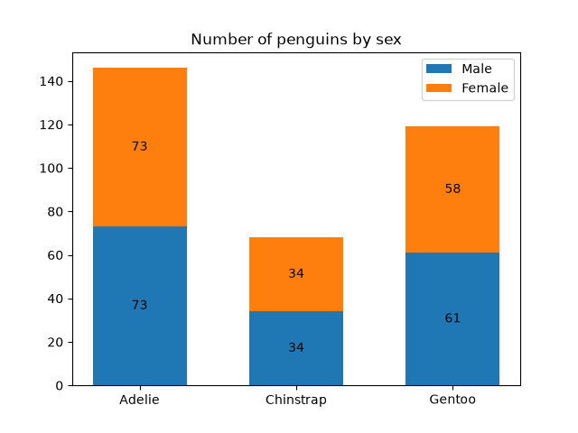
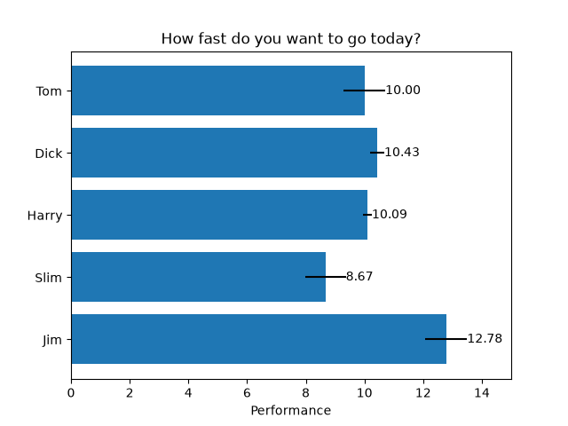
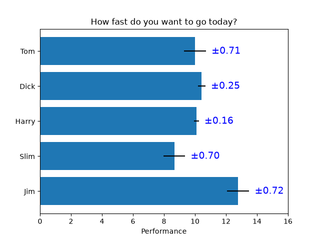
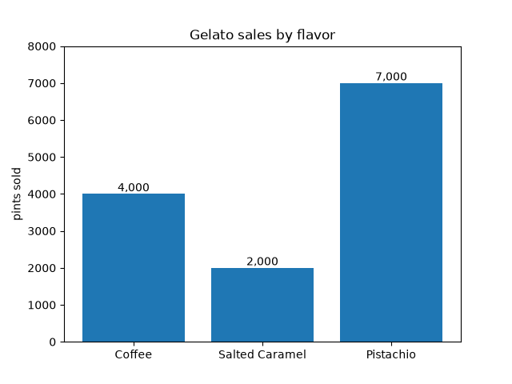
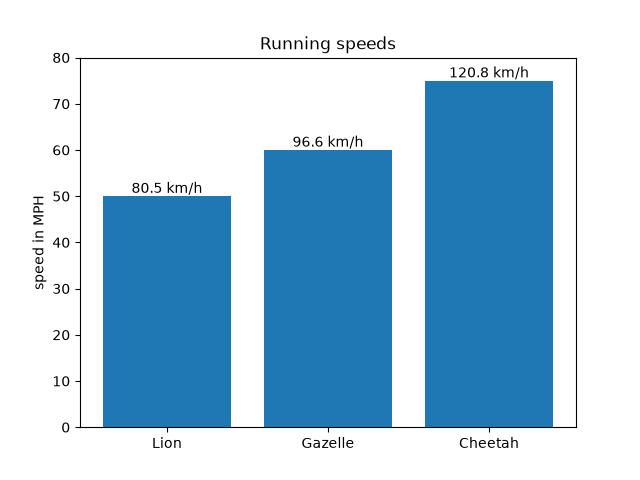

Note
Go to the end to download the full example code.
Bar chart with labels#
This example shows how to use the bar_label helper function
to create bar chart labels.
See also the grouped bar, stacked bar and horizontal bar chart examples.
import matplotlib.pyplot as plt
import numpy as np
data from https://allisonhorst.github.io/palmerpenguins/
species = ('Adelie', 'Chinstrap', 'Gentoo')
sex_counts = {
'Male': np.array([73, 34, 61]),
'Female': np.array([73, 34, 58]),
}
width = 0.6 # the width of the bars: can also be len(x) sequence
fig, ax = plt.subplots()
bottom = np.zeros(3)
for sex, sex_count in sex_counts.items():
p = ax.bar(species, sex_count, width, label=sex, bottom=bottom)
bottom += sex_count
ax.bar_label(p, label_type='center')
ax.set_title('Number of penguins by sex')
ax.legend()
plt.show()

Horizontal bar chart
# Fixing random state for reproducibility
np.random.seed(19680801)
# Example data
people = ('Tom', 'Dick', 'Harry', 'Slim', 'Jim')
y_pos = np.arange(len(people))
performance = 3 + 10 * np.random.rand(len(people))
error = np.random.rand(len(people))
fig, ax = plt.subplots()
hbars = ax.barh(y_pos, performance, xerr=error, align='center')
ax.set_yticks(y_pos, labels=people)
ax.invert_yaxis() # labels read top-to-bottom
ax.set_xlabel('Performance')
ax.set_title('How fast do you want to go today?')
# Label with specially formatted floats
ax.bar_label(hbars, fmt='%.2f')
ax.set_xlim(right=15) # adjust xlim to fit labels
plt.show()

Some of the more advanced things that one can do with bar labels
fig, ax = plt.subplots()
hbars = ax.barh(y_pos, performance, xerr=error, align='center')
ax.set_yticks(y_pos, labels=people)
ax.invert_yaxis() # labels read top-to-bottom
ax.set_xlabel('Performance')
ax.set_title('How fast do you want to go today?')
# Label with given captions, custom padding and annotate options
ax.bar_label(hbars, labels=[f'±{e:.2f}' for e in error],
padding=8, color='b', fontsize=14)
ax.set_xlim(right=16)
plt.show()

Bar labels using {}-style format string
fruit_names = ['Coffee', 'Salted Caramel', 'Pistachio']
fruit_counts = [4000, 2000, 7000]
fig, ax = plt.subplots()
bar_container = ax.bar(fruit_names, fruit_counts)
ax.set(ylabel='pints sold', title='Gelato sales by flavor', ylim=(0, 8000))
ax.bar_label(bar_container, fmt='{:,.0f}')

Bar labels using a callable
animal_names = ['Lion', 'Gazelle', 'Cheetah']
mph_speed = [50, 60, 75]
fig, ax = plt.subplots()
bar_container = ax.bar(animal_names, mph_speed)
ax.set(ylabel='speed in MPH', title='Running speeds', ylim=(0, 80))
ax.bar_label(bar_container, fmt=lambda x: f'{x * 1.61:.1f} km/h')

References
The use of the following functions, methods, classes and modules is shown in this example: